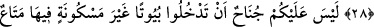
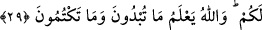
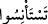
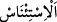

EV HALKINA SELÂM VERMEK
27. Ey îman edenler! Kendi evinizden başka evlere, geldiğinizi farkettirip (izin
alıp) ev halkına selâm vermedikçe girmeyin. Bu sizin için daha iyidir; herhalde
(bunu) düşünüp anlarsınız.
28. Orada hiçbir kimse bulamadınızsa, size izin verilinceye kadar oraya girmeyin.
Eğer size, “Geri dönün!” denilirse, hemen dönün. Çünkü bu, sizin için daha nezih
bir davranıştır. Allah, yaptığınızı bilir.
29. İçinde kendinize âid eşyânın bulunduğu oturulmayan evlere girmenizde
herhangi bir sakınca yoktur. Allah, sizin açığa vurduklarınızı da, gizlediklerinizi de
bilir.
Adiy b. Sâbit’ten gelen bir rivâyete göre Ensar’dan bir adam şöyle demiştir: “Bir
kadın Rasûlullah (s.a.)’e gelip: Ya Rasûlallah, bazen evimde kimsenin görmesini
istemediğim bir halde bulunuyorum. Derken birisi gelip farkında olmadan içeri giriyor,
ben ne yapayım?” dedi. Peygamberimiz (s.a.) ona, dönüp gitmesini söyle dedi.
Ardından bu âyet nâzil oldu.[143]
“Ey îman edenler! Kendi evinizden başka evlere,” yâni hiçbir yabancının evine
girmeyin.
Evlerin ‘kendilerinin evlerinden başka evler’ olarak vasfedilmesi alışılmışın dışında
bir kullanımdır. Normalde ‘ev’ herkesin kendi mülkünde olan meskenidir. Yoksa kira
veyâ emânet olarak veren kimseye de izinsiz girmesi yasaklanmıştır.
“Farkettirip (izin alıp)” yâni o evlerin sâhiplerinden izin verme hakkına sâhip
olanlardan izin alıp… Yâni haber alıp izin isteyinceye dek…
“
” kelimesi bir şeyi açıkça görüp bilmek istemek anlamında “
”dandır.
Çünkü izin isteyen kimse kendisine izin verilecek mi yoksa verilmeyecek mi diye
durumu öğrenmek ister. Ya da ürkmenin zıddına alışıp ısınmak anlamında “
”dandır. Çünkü izin talebinde bulunan kimse kendisine izin verilip verilmeyeceğinden